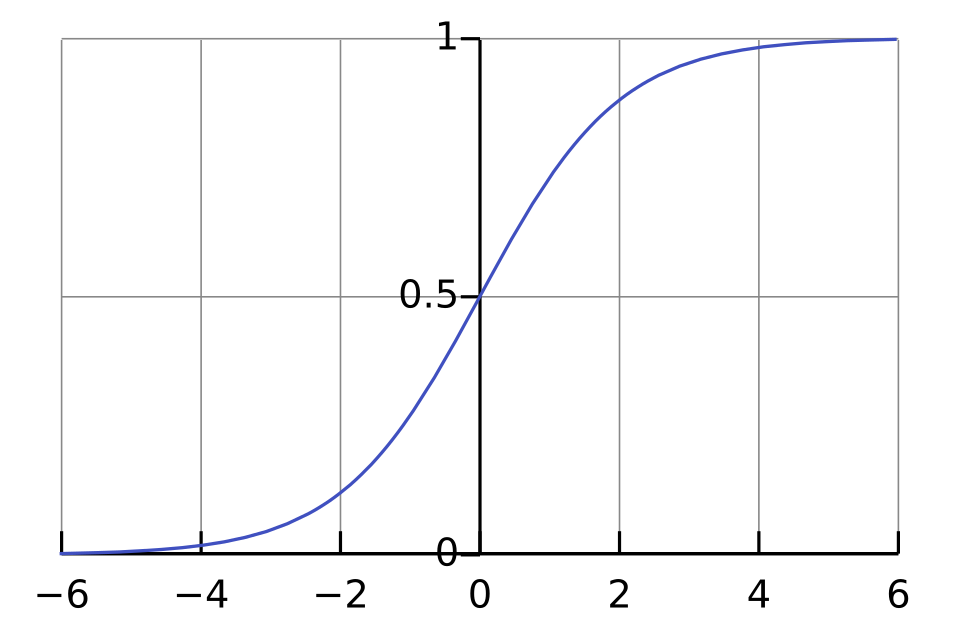
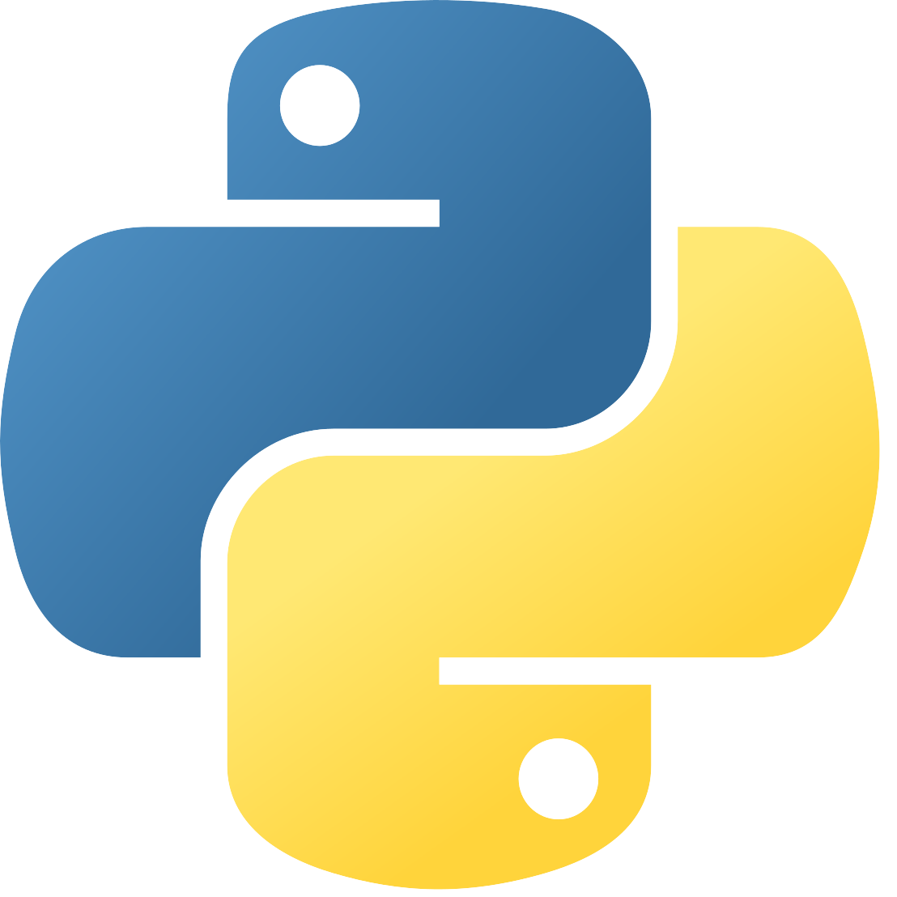

Operations Execution运营执行
Current Gofo station work grounds my analytics in real operational constraints, handoffs, and daily performance needs.Gofo 站点工作让我从真实运营约束、交接流程与日常绩效需求出发做分析。
Operations Analytics Portfolio
Station Operations Specialist at Gofo, applying data science, machine learning, and visual analytics to practical operating decisions. Gofo 站点运营专员，将数据科学、机器学习与可视分析应用于实际运营决策。
About
I am a Station Operations Specialist at Gofo with hands-on experience in Python, SQL, Snowflake, machine learning, GIS, and visual analytics. My work connects day-to-day station operations with analytical thinking, spanning logistics workflows, energy systems, public safety, financial operations, and interactive dashboards.
我目前在 Gofo 担任站点运营专员，具备 Python、SQL、Snowflake、机器学习、GIS 与可视分析实践经验。我的工作连接一线站点运营与数据分析思维，项目覆盖物流流程、能源系统、公共安全、金融运营和交互式仪表盘。
Current Gofo station work grounds my analytics in real operational constraints, handoffs, and daily performance needs.Gofo 站点工作让我从真实运营约束、交接流程与日常绩效需求出发做分析。
Projects translate models, spatial data, and dashboards into recommendations people can act on.项目将模型、空间数据与仪表盘转化为可以行动的建议。
Python, SQL, Snowflake, Tableau, GIS, machine learning, and AI apps for analysis and workflow support.使用 Python、SQL、Snowflake、Tableau、GIS、机器学习与 AI 应用支持分析和流程优化。
Featured Work
Dec. 2025
Mapped candidate wind farm locations by combining spatial constraints, suitability modeling, and clear story-map communication for planning review.
April - June 2025
Built a data-driven recommendation workflow for fire-resilient tree planting in Los Angeles, connecting risk data to practical urban design choices.
Project Library
Nov. 2025
Modeled curtailment patterns to clarify renewable energy grid integration tradeoffs and support policy-ready analysis.
April - May 2025
Designed an NLP workflow to detect and compare bias signals across article text for more transparent content review.
Feb - March 2025
Created an interactive system for predicting and visualizing student placement outcomes so users could compare drivers quickly.
August - Sep 2024
Studied visual variation and perception in Warhol's iconic artwork through analytical comparison.
May 2023
Used statistical analysis to identify risk-factor patterns in heart disease data.

ModelingFebruary 2023
Compared optimization techniques for logistic regression with attention to convergence behavior.
Timeline
Station Operations Specialist supporting site execution, daily coordination, and operations improvement with a data-informed mindset.
AI Prompt Engineer Intern working across evaluation, prompt iteration, and structured AI workflows.
MS in Data Science with coursework in machine learning, big data, HCI, GIS, and visual analytics.
Data Development Engineer Intern supporting data engineering and analytics workflows.
Planning and Financial Department Intern connecting financial operations with structured data analysis.
Led and contributed to applied analytics projects across GIS, NLP, visual analytics, sustainability, and statistical modeling.
Quantitative Researcher Intern exploring financial signals and analytical research methods.
BS in Statistics, Data Science track, with foundations in regression, time series, statistical learning, and computing.
Toolkit

Python
Snowflake
SQL
Tableau
Machine Learning
ArcGIS Pro
AI Apps
Contact